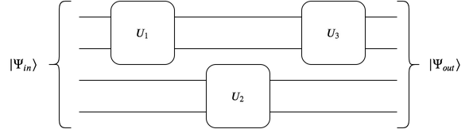

Earlier this summer I had the good fortune to be able to attend an (online) workshop on information and complexity. One of the most fascinating talks was by Scott Aaronson on the question of the emergence of the classical world from an underlying quantum substrate and the relation to complexity and computation.
Background
This - how the classical world emerges from the “quantum realm”(This term has been popularised by a recent “Avengers” movie. Its not what I would use but its popularity outweighs my dislike for the expression.) - is one of the most fundamental questions in theoretical physics. It was mostly bypassed by the founders of quantum mechanics and swept under a rug which goes by the name of the “Copenhagen interpretation”. According to this dogma, which continues to reign at present as the most widely accepted interpretation of quantum mechanics, the wave function of a system undergoes “collapse” when an external observer performs a measurement on that system. The why and wherefores of the collapse process are not relevant and all that matters is the final result which can be determined using the Born rule, according to which the probability of a given outcome is proportional to the ``length’’ of the projection of the state vector representing that outcome upon the original state vector of the system. More precisely let \(\cal S\)be a system which is described a state\(\ket{\Psi}\)just prior to the measurement. The external observer\(\cal O\)makes a measurement which is represented by an operator\(\hat A\). After the measurement the system collapses into some state \(\ket{\Phi_i}\)which is an eigenstate of\(\hat A\), i.e.: \(\hat A \ket{\Phi_i} = \lambda_i \ket{\Phi_i}\)where\(\lambda_i\)is the associated eigenvalue and the index\(i\)enumerates the different possible eigenstates. In the aftermath of the measurement the observer “finds” that the value of the “observable” represented by the operator\(\hat A\)is\(\lambda_i\). Of course, there is no way to predetermine which eigenstate the system ends up in. One can only associate a probability with each outcome \(\lambda_i\)and this probability is given by the Born rule:\(P(\lambda_i) = \norm{\innerp{\Psi}{\Phi_i}}^2\)As a simple example one can consider a system with only two possible outcomes. Let us say\(\cal S\)is a ball which can be coloured either red or blue. These two possibilities will be represented by state vectors\(\ket{\text{red}}\)and\(\ket{\text{blue}}\), respectively. Let us assume that the state of the system prior to the measurement is some superposition of these two possibilities: \(\ket{\Psi} = \alpha \ket{\text{red}} + \beta \ket{\text{blue}}\)where\(\alpha, \beta\)are two complex numbers which are arbitrary apart from the constraint that\(\norm{\alpha}^2 + \norm{\beta}^2 = 1\), where the norm of any complex number is given by: \(\norm{\alpha} = \alpha^* \alpha\), with \(\alpha^*\)being the complex conjugate of\(\alpha\). For this simple system, there is only one observable \(\hat C\)which corresponds to measuring the colour of the ball. The two states\(\ket{\text{red}}\)and\(\ket{\text{blue}}\)are eigenstates of this operator:\(\hat C \ket{\text{red}} = \ket{\text{red}}; \quad \hat C \ket{\text{blue}} = - \ket{\text{blue}}\)with eigenvalues\(+1\)and\(-1\)respectively. When the external observer makes a measurement of this observable, they find that the ball is either red or blue with probabilities for either case given by the Born rule. For e.g., the probability that the observer finds that the ball is red is given by:\(P(\text{red}) = \norm{\innerp{\Psi}{\text{red}}}^2 = \norm{\alpha}^2\)Likewise the probability that the ball is blue is given by\(P(\text{blue}) = \norm{\beta}^2\). Now, this might seem all well and good, barring the usual “intuition” lag one suffers in going from the usual classical, deterministic way of doing things to the quantum, probabilistic way. Indeed, for most of the past century this is how physics has been done. All freshly minted physicists have faced this intuition lag and eventually overcome it by the sweeping away all their doubts under the rug of the Copenhagen interpretation. However, over time enough of those doubts have accumulated under that rug that it is no longer possible to ignore them! 
No Quantum Without Gravity
This uncomfortable situation can be illustrated as follows. Consider our system \(\cal S\)to consist not of something so simple as a two-colour ball but something bigger and more complex such as a planet. Since what we ultimately care about in this blog is the question of quantum gravity, let us throw gravity into the mix and consider our system to be represented by two states\(\ket{\text{planet}}\)and\(\ket{\text{no-planet}}\). The state \(\ket{\text{no-planet}}\)corresponds to an ordinary, empty flat spacetime (or\(\mbb{R}^{3,1}\)for afficionados). The state\(\ket{\text{planet}}\)corresponds to a spacetime with a, you guessed it, planet sitting in the center(Of course, one could replace “planet” with “black hole” but I don’t want to scare away readers by introducing this unnecessary complication.). Now, let us consider a state which is an equal superposition of these two possibilities:$\(\label{eqn:planet-superposition} \ket{\Psi_{QG}} = \frac{1}{\sqrt{2}}\left( \ket{\text{planet}} + \ket{\text{no-planet}} \right) \\\)Such a state is more than an ordinary quantum mechanical state. It is a quantum gravitational state because it involves a superposition of two spacetimes with different geometries. Of course, according to the equivalence principle any distribution of matter - whether it is something as small as an electron or something as large as a galaxy - distorts the spacetime geometry in its neighbourhood. From this perspective, every quantum state - even if it involves an electron in a superposition of two different spin states or two different position states - is a quantum gravitational state(This perspective is not new. It is originally due to Roger Penrose and is the basis of his theory of gravity induced state vector collapse.). This subtlety can safely be neglected (or so it is commonly believed) when dealing with systems whose gravitational interactions are negligible in strength compared to the interactions due to electromagnetic and other forces.
Superposing Geometries
Now it is states such as\(\ket{\Psi_{QG}}\)above which the source of constant consternation amongst theorists. The reason is that while one can formally write down such a state, we don’t really know how to construct a superposition of two different geometries. One reason for this is that in the usual framework of quantum mechanics we are familiar with, quantum states are defined with respect to some background geometry. For instance, one writes a state as\(\ket{\phi} = \int \phi(\vect{x},t) \ket{\vect{x},t} d^4 x\)in the position representation or as\(\ket{\phi} = \int \phi(\vect{k},\omega) \ket{\vect{k},\omega} d^4 k\)in the momentum representation. Of course, the notion of momentum also needs a background (translationally invariant) spacetime so both representations depend on the existence of a background geometry. So, when we refer to the superposition of two different states we would use an expression of the form:\(\ket{\phi_1} + \ket{\phi_2} = \int \left(\phi_1(\vect{x},t) + \phi_2(\vect{x},t)\right) \ket{\vect{x},t} d^4 x\)It is not at all clear what one should do in the event that the spacetime geometry itself is represented by a quantum state. How should one write down a superposition of states in such a situation?
To Collapse or Not To Collapse
Roger Penrose suggested that one way out of this dilemma would be to assume that quantum states which correspond to superpositions of geometries would be unstable and would eventually collapse into one or the either geometry in a time scale inversely proportional to the energy difference between the two configurations. In the above case of\(\ket{\Psi_{QG}}\)(\(\ref{eqn:planet-superposition}\)), for instance, the state should collapse into either the state\(\ket{\text{planet}}\)or to the state\(\ket{\text{no-planet}}\)in a time\(\sim M^{-1}\), where\(M\)is the mass of the planet.
Such an arrangement would necessarily require a modification of the usual rules of quantum mechanics, rules which have been tested to great precision in a great many experimental tests over the decades. To be fair, nobody has as yet tested quantum mechanics at the scales required for Penrose’s argument. This is simply due to the extreme difficulty in arranging superpositions of macroscopic amounts of matter. The greater the number of degrees of freedom of a quantum state, the more likely it is that the state will decohere due to random interactions with its environment such as with stray phonons and photons or gravitons and neutrinos which happen to be passing by. Nevertheless, the conservative option would be to not assume that quantum mechanics is modified at large scales. Thus the conservative physicist - and physicists are by nature conservative when it comes to considering mutations of the laws of nature - would be more inclined to find a resolution of this dilemma within the confines of conventional quantum theory rather than to propose a completely new theoretical framework.
Complexity to the Rescue
Quantum complexity theory (“Quantum Complexology?”) is the branch of quantum mechanics which studies the landscape of computational problems which can be tackled by a quantum computer, either now or in the future. It involves asking questions such as whether a given problem can be solved in a finite amount of time using a quantum computer with finite computational capacity (As Scott clarified to me the more correct statement is not what a system can do in a “finite” amount of time, but what it can do “efficiently”, for e.g. in polynomial time (polynomial in the size of the system). It seems). Depending on its “hardness” a problem can be assigned to one or more of several complexity classes. An example of such a class is BQP (“Bounded error Quantum Polynomial time”).
One of the world’s foremost researchers in this field is Scott Aaronson. In the Complexity Workshop mentioned at the beginning he gave a talk wherein he described a possible resolution to the quantum measurement dilemma lying entirely within the confines of conventional quantum theory. He also mentioned that it was Leonard Susskind who first came up with the idea and shared it with Scott via email some years ago. I will therefore refer to this proposed resolution as the Susskind-Aaronson conjecture (in so far as it implies anything about our understanding of the measurement problem) (Scott reminded me that this is a “conjecture” only in so far as it says anything about the measurement problem. In his own words, “the relationship between the circuit complexity of detecting macroscopic superpositions and the circuit complexity of swapping their components is a theorem” proven by Aaronson and Atia.).
Quantum State Complexity
One way to measure the complexity of a given quantum state is to ask how small is the smallest possible circuit required to generate that state. As an example consider a system of consisting of\(n\)qubits (systems which have only two degrees of freedom, such as the two colour ball in the earlier example). Each qubit can be in either one of two states\(\ket{0}\)or\(\ket{1}\). An arbitrary state of a single qubit can therefore be written as:\(\ket{\Phi_1} = \alpha \ket{0} + \beta \ket{1}\)where, as before,\(\alpha, \beta \in \mbb{C}\)and\(\norm{\alpha}^2 + \norm{\beta}^2 = 1\). How does this extend to the case of\(n\)qubits? Each possible basis state that the\(n\)qubit system can be in will be of the form:\(\ket{001100\ldots010}\)where the first qubit is in the state\(\ket{0}\), the third is in\(\ket{1}\)and so on until the\(n^\text{the}\)qubit. An arbitrary state of this\(n\)qubit system can then be written in the form:\(\label{eqn:n-qubit-state} \ket{\Phi_n} = \sum_{i_1,\ldots,i_n \in {0,1}} C_{i_1 i_2 \ldots i_n} \ket{i_1 i_2 \ldots i_n} \\\)where each of the indices\(i_k\)is either\(0\)or\(1\)and the sum is over all possible combinations of the indices.\(C_{i_1 i_2 \ldots i_n}\)are complex numbers the sum of whose norms should add upto 1.
For simplicity let us set\(n=3\)and consider two different three qubit states:\(\ket{\psi_1} & = \ket{000} \nonumber \\\\ \ket{\psi_2} & = \frac{1}{\sqrt{3}} \left( \ket{001} + \ket{010} + \ket{100} \right) \nonumber \\\)Clearly, the second state\(\ket{\psi_2}\)is more “complex” than the state\(\ket{\psi_1}\)in the sense that it would take an experimentalist a greater number of steps to prepare the second state than the first state. In general one might expect that the greater the number of non-zero coefficients\(C_{i_1 i_2 \ldots i_n}\)in the expression (\(\ref{eqn:n-qubit-state}\)) the more “complex” the given state will be.
One way to measure the complexity of a given state to ask for the minimum circuit which can generate that state starting from an initial reference state. A circuit is simply a collection of gates which act on pairs (or n-tuples) of qubits in the system as shown in the above figure. The reference state\(\ket{\Psi_{in}}\)is generally chosen to be a “simple” state such as\(\ket{00 \ldots 0}\). Given a pair of in and out states there exist, in general, many different circuits which can generate the out state from the in state. (One measure) of the complexity of the out state (relative to the in state) would then be given by the number of gates in the smallest set of gates which can take\(\ket{\Psi_{in}} \rightarrow \ket{\Psi_{out}}\).
Complexity and State Distinguishability
We can now state the Susskind-Aaronson-Atia theorem(Scott mentioned in his talk that this was work he had done with his postdoc Yosi Atia. Thus it would be only appropriate to append Atia’s name to the conjecture/theorem) (which provides theoretical justification for the above-mentioned conjecture):
As an illustration of this theorem let us consider that the state we wish to examine\(\ket{\Psi_{QG}}\)(\(\ref{eqn:planet-superposition}\)). It is very important to emphasize that Susskind and Aaronson are not saying that the state\(\ket{\Psi_{QG}}\)spontaneously collapses into either the state\(\ket{\text{planet}}\)or the state\(\ket{\text{no-planet}}\). The good old rules of quantum mechanics are completely valid. One can, in principle, construct a superposition of absolutely any two states one can conceive of. This can include states of the form:\((\ket{\text{cat-alive}}, \ket{\text{cat-dead}}); \quad (\ket{\text{baby-crying}}, \ket{\text{baby-sleeping}}); \quad (\ket{\text{planet}}, \ket{\text{no-planet}})\)The first of these three pairs constitute’s the famous “Schrodinger’s cat” thought experiment. The rules of quantum mechanics imply that an experimentalist (say ‘Alice’) should, in principle, be able to construct an experiment which results in a cat being in a superposition of being dead and alive at the same time!\(\ket{\Psi^+_{cat}} = \frac{1}{\sqrt{2}} \left( \ket{\text{cat-dead}} + \ket{\text{cat-alive}} \right)\)(The reason for the\(+\)superscript on the l.h.s in the above equation will become clear shortly.) The weirdness does not end there, though. Another experimentalist (‘Bob’) could construct a similar state but only with a dog in place of a cat(I wish to note here that I find such states to be extremely distasteful. Imagine is someone replaced “cat” or “dog” with “human”! Going forwards we should think of somewhat less extreme alternatives such as (“awake”, “asleep”) rather than (“dead”, “alive”)).\(\ket{\Psi^+_{dog}} = \frac{1}{\sqrt{2}} \left( \ket{\text{dog-dead}} + \ket{\text{dog-alive}} \right)\)The combined state of the cat+dog system would now be described by a state of the form:\(\ket{\Psi^{++}} = \ket{\Psi^{+}_{cat}} \ket{\Psi^{+} _ {dog} }\)Given two different states of a system\(\ket{v}\)and\(\ket{w}\)the complexity associated with being able to detect interference between the two states is proportional to the complexity associated with mapping\(\ket{v}\)to\(\ket{w}\)(or vice versa).
Quantum Necromancy
In addition to the\((+)\)states defined above one can also define\((-)\)states:\(\ket{\Psi^-_{cat}} = \frac{1}{\sqrt{2}} \left( \ket{\text{cat-dead}} - \ket{\text{cat-alive}} \right)\)where now there is a\((-)\)sign in the linear sum on the r.h.s.. In this way one can construct states of the form\(\ket{\Psi^{++}}, \ket{\Psi^{+-}}, \ket{\Psi^{-+}}, \ket{\Psi^{- -}}\)for the combined cat+dog system. Furthermore one can also construct superpositions of these states. Let us consider one such state:\(\ket{\Phi} = \ket{\Psi^{+-}} - \ket{\Psi^{-+}}\)A few lines of algebra will convince the reader that this state has the form:\(\ket{\Phi} = \ket{\text{cat-alive}} \* \ket{\text{dog-dead}} - \ket{\text{cat-dead}} \* \ket{\text{dog-alive}}\)Let us introduce a third experimentalist ‘Schrodinger’ who performs a measurement on the state\(\ket{\Phi}\)which describes the combined cat+dog system. Let us suppose that ‘Schrodinger’ measures the state the cat is in and finds that it is in the ‘alive’ state. Then the form of the state\(\ket{\Phi}\)necessarily implies that the dog must be in the ‘dead’ state. Likewise if ‘Schrodinger’ finds that the cat is ‘dead’ then quantum mechanics implies that the dog must be alive!
The state\(\ket{\Phi}\)is what is known as an entangled state and such bewildering outcomes are part of the structure of quantum mechanics. Aaronson refers to such a setup by the term “quantum necromancy” referring to the quantum version of the practice of raising things from the dead.
The Susskind-Aaronson-Atia theorem and its implications for our understanding of the measurement problem would, if correct, dash the hopes of any would-be quantum necromancers. In order to be able to perform such an experiment one would necessarily have to be able to distinguish between the two states\(\ket{\text{dead}}\)and\(\ket{\text{alive}}\). Now, it is clear that the relative complexity of these two states is of the order of the size of the system. Therefore as per Susskind-Aaronson-Atia in order for ‘Schrodinger’ to be able to perform an experiment of sort described above and to actually detect the entanglement between the ‘dead’ and ‘alive’ state, he would require an apparatus which was of the order of the size of the system.
Here the system under consideration ( a cat or a dog) has approximately order Avogadro number (\(N_A \sim 10^{23}\)) of degrees of freedom. Performing an experiment which can detect entanglement between a pair of spins - the simplest quantum mechanical systems possible with only two degrees of freedom - requires an elaborate laboratory setup. In order to perform a similar experiment, but with dogs and cats instead of with spins, one would require a laboratory setup which was\(\sim 10^{23}\)$
times more complex than the one used for measuring spin entanglement! Constructing such a laboratory would be beyond the resources of most laboratories in existence.
Classicality from Complexity
To conclude, the Susskind-Aaronson-Atia theorem provides us with a route for obtaining a classical world, with well defined boundaries between the dead and alive, from an underlying quantum substrate without violating the rules of conventional quantum mechanics. In this framework there is no need for any gravity induced state vector collapse of the form envisioned by Penrose and others or any requirement for introducing additional postulates or modifying the existing postulates of quantum mechanics. The classical world arises simply because as systems become more complex the difficulty of detecting interference between different quantum states increases exponentially with the size of the system. Therefore, as system size increases one very quickly reaches a threshold where it is no longer feasible to perform experiments which can demonstrate interference between different states. Classicality then becomes a fait accompli. This is by no means the end of the story, however. There are many subtleties in the above discussion which must be further investigated in order for the SAA conjecture (as it applies to the measurement problem) to meet the standard of proof. Moreover experimental developments may well put an end to this form of the SAA conjecture if it turns out to indeed be possible to construct superpositions of macroscopic objects such as droplets of liquid helium without needing exponentially complex laboratory setups. Many such experiments are in the works and the situation should become clearer sooner rather than later. Acknowledgment: I am grateful to Scott Aaronson for going over a draft version of this post and suggesting corrections which I have incorporated in this post.